What fits us
- The work comes first: video leads every page.
- A calm, clean interface that never competes with the films.
- Projects sorted by type, so every client finds their kind of work fast.
Chapter 01
Everything started with the logo. Before a single page was planned, the brand needed a mark, a palette and a typeface that speak like Double Shesh: simple, warm and at eye level.
01 / Identity

Double Shesh is a boutique production house that talks to every audience at eye level. Shesh Besh, the local name for backgammon, is a simple game everyone plays, and that down-to-earth spirit is exactly who they are as a business. The logo distills the game into its plainest form: horizontal bars cut by slanted lines into triangles that echo a camera shutter, a film clapperboard and a backgammon board all at once. Those triangles are the DNA of the whole brand language.
02 / Palette
 Signal Red
Signal Red#CA1515RGB 202, 21, 21The accent: the smallest, point-like element. Black
Black#000000RGB 0, 0, 0Logo, type, full-bleed surfaces. Gray
Gray#242423RGB 36, 36, 35Soft dark surfaces, overlays. Silver
Silver#D9D9D9RGB 217, 217, 217Dividers, captions, quiet fields.White#FFFFFFRGB 255, 255, 255Primary background.Color hierarchy: red is the smallest, point-like element. White takes most of the space.
03 / Type
04 / In use


Chapter 02
With the brand in place, the old website had to go. I researched, defined the structure, wireframed every page, designed the site and built it myself in Wix.
05 / Research
We started with the websites of production companies, from boutique studios to industry leaders, to see what fits Double Shesh and what doesn't. The research sharpened who we are talking to. High-end cinema is only part of it: the site has to speak just as clearly to everyday clients, such as kibbutzim and schools, and carry what Double Shesh brings with them, eye level.
Commercials, brand films and social content.
Music videos.
Short films and documentaries.
Kibbutzim, schools and educational institutions.
06 / Redesign
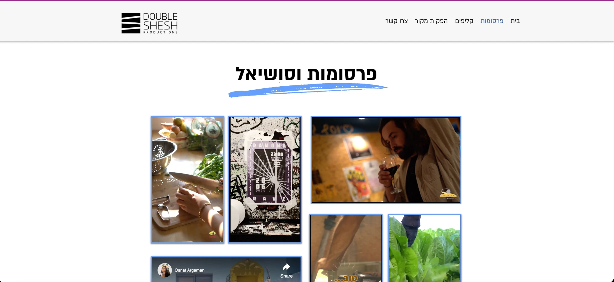
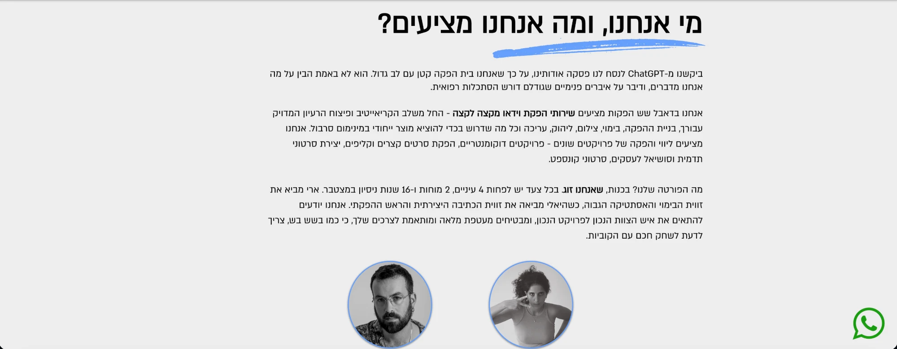
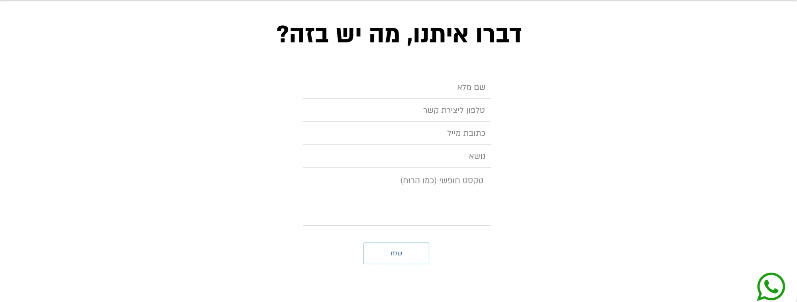
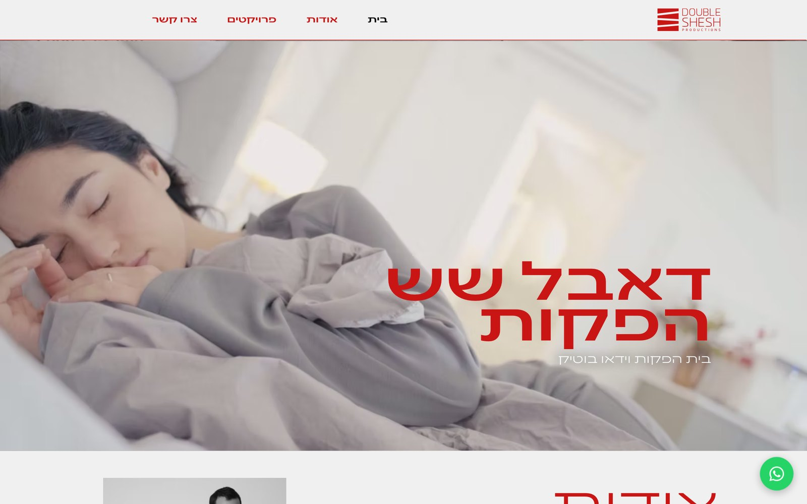
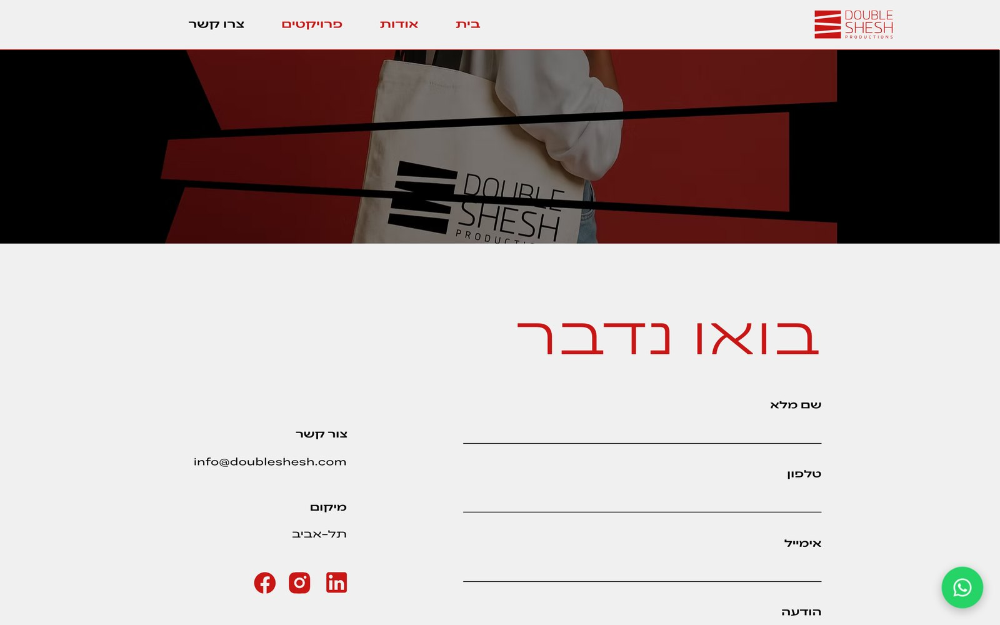
07 / Structure
08 / Wireframes
Two templates for a project page, one per video shape: a wide player for films and commercials, and a tall player beside related work for vertical social videos.

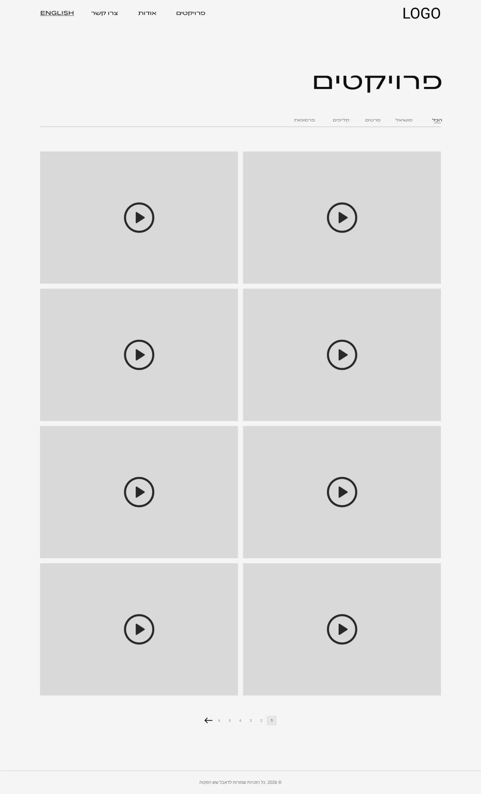
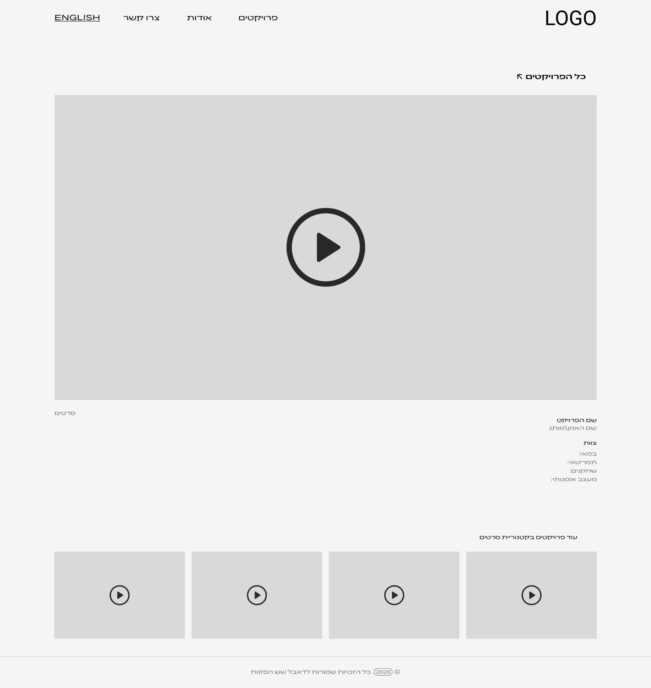
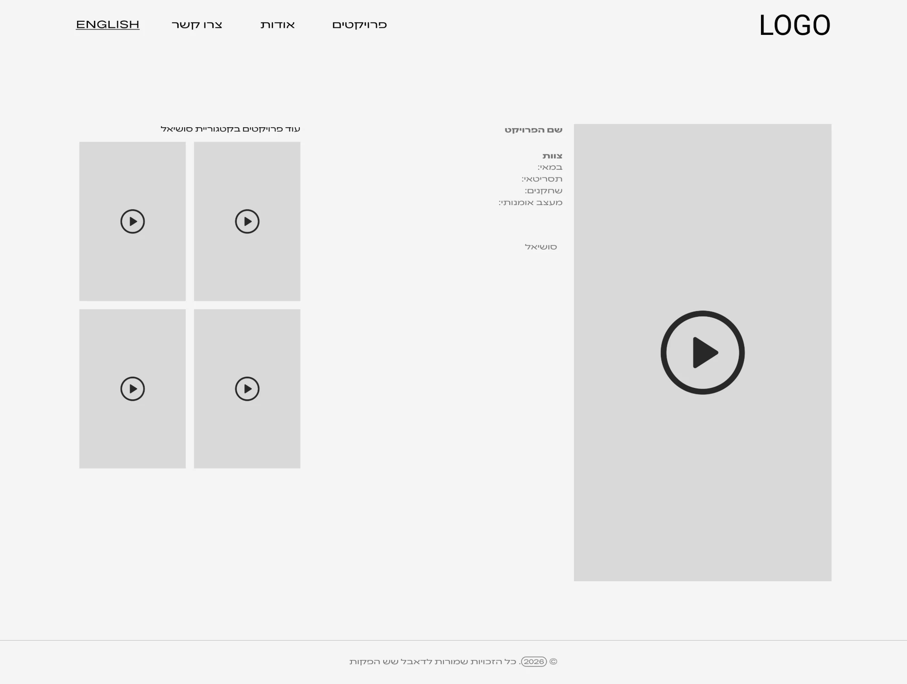
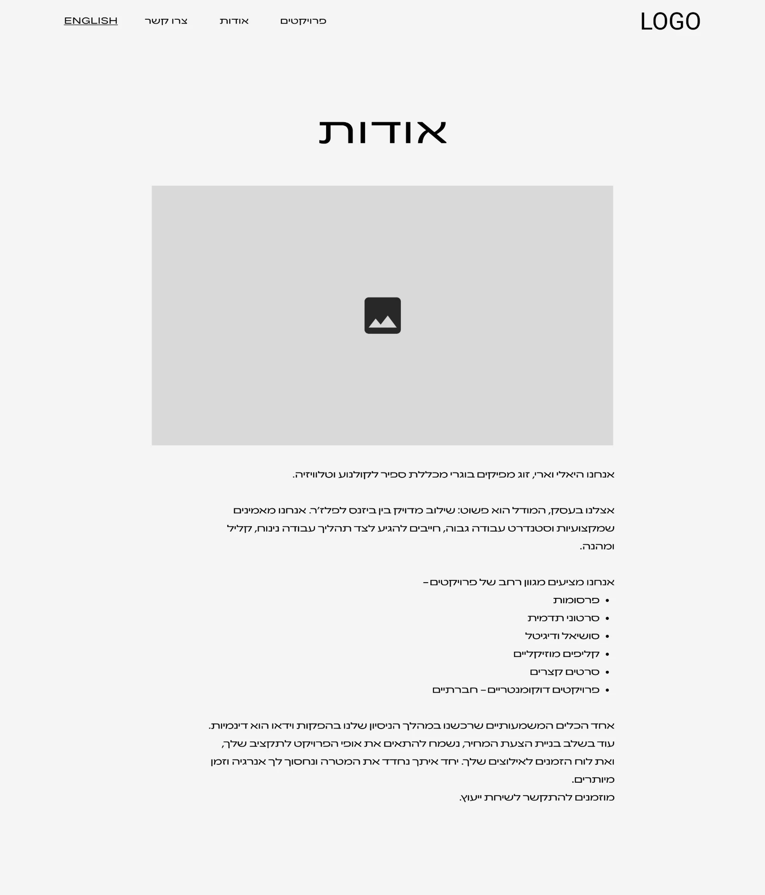
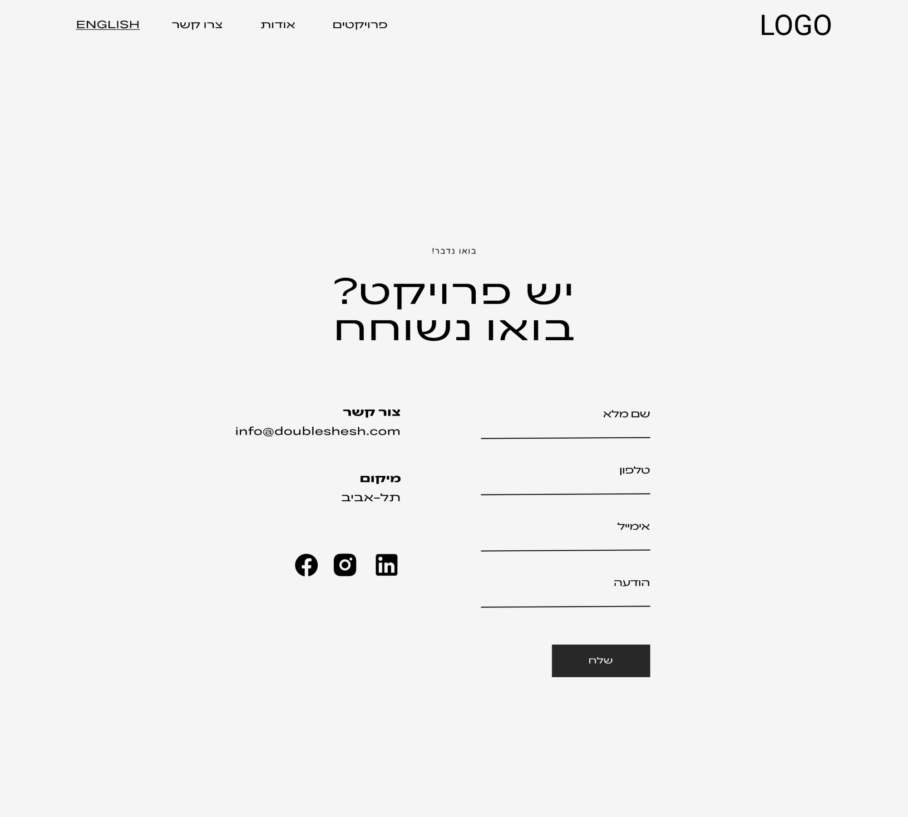
09 / Responsive
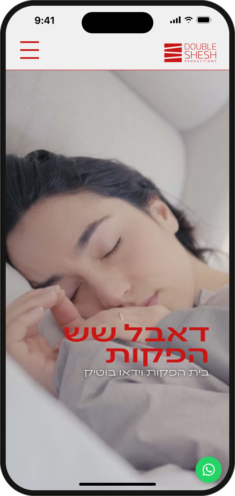
Home
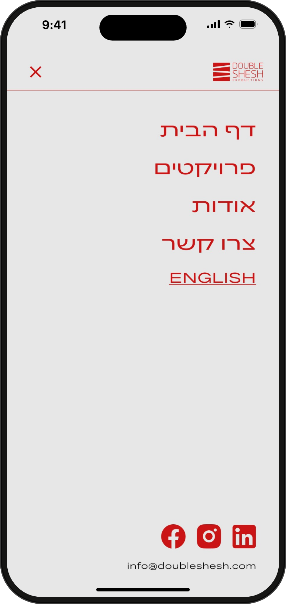
Menu
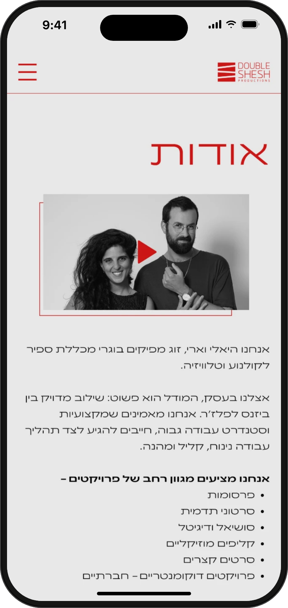
About
10 / Try it
Thank you for watching